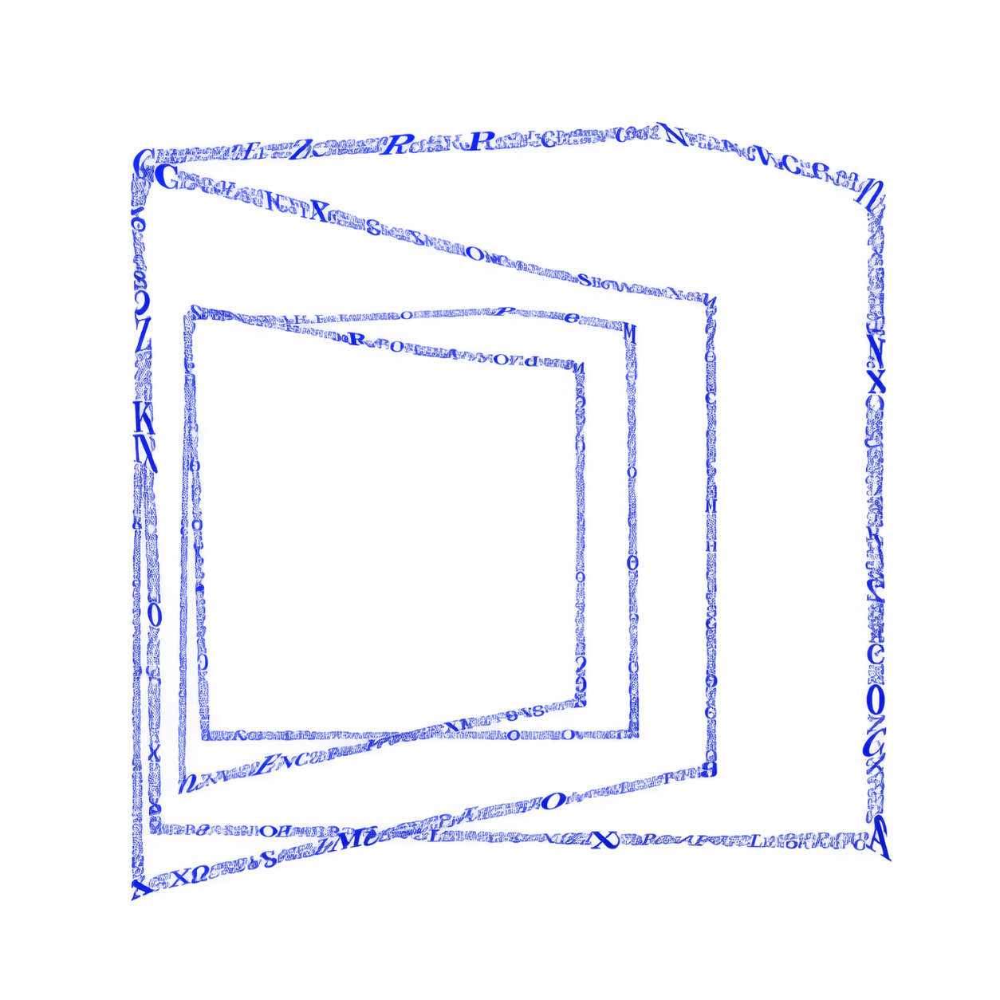
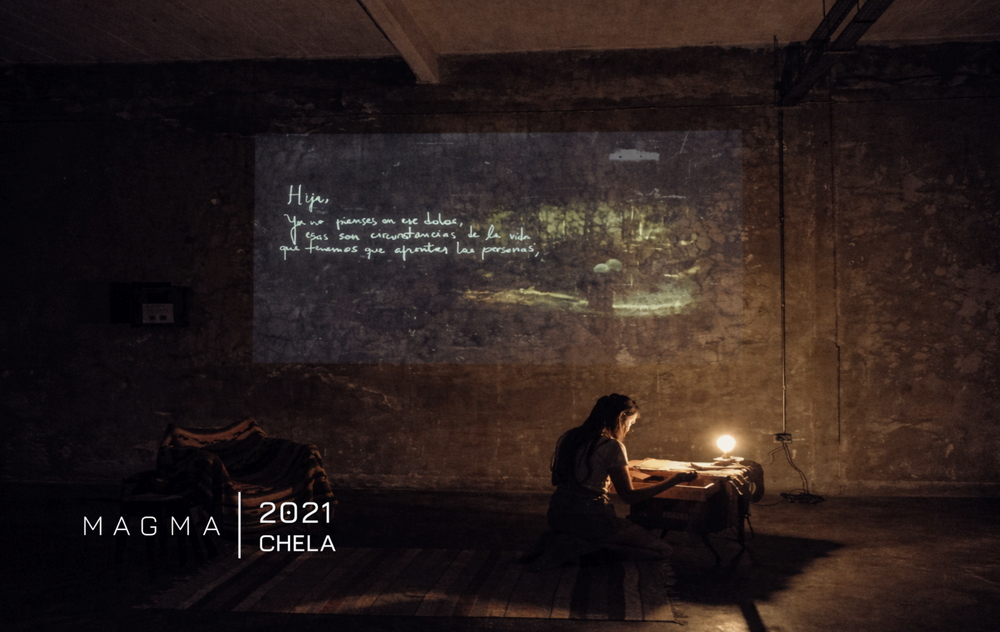
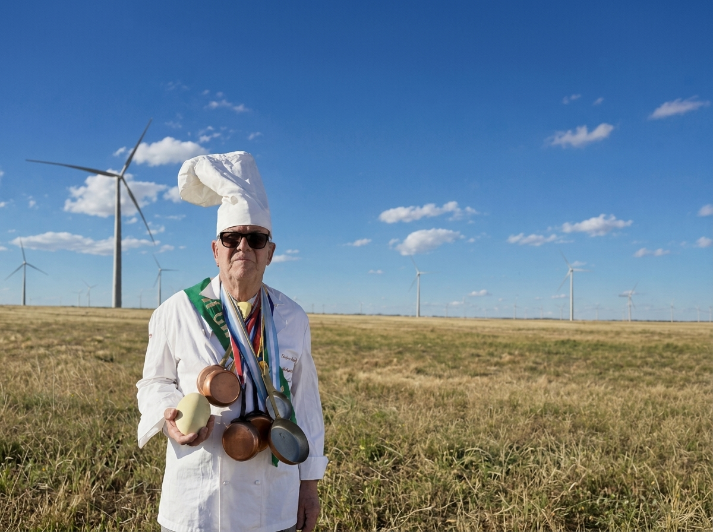

My documentary and installation practice is grounded in a shared interest in reconstructed identity: how a person, a family, or a memory can be pieced together through fragments, objects, voices, and archival images.
Correspondence from a Mother
My work encompassed creative direction and spatial design, archival digitisation and transfer to Super 8, the curatorial development of written materials, the narrative structuring of the visitors' spatial journey, video editing, and collaboration on art direction.

View of the installation adaptation presented at MAGMA, CheLA, 2021.
An interactive installation set within the home of a woman grieving her estranged daughter. The viewer assumes the role of a detective, moving through the different spaces while gathering traces of the character's past: letters, photographs, notes, underlined magazines, and other objects arranged for examination. These elements reveal her mental state and obsessions, with each space representing a different stage of her grieving process. The experience shifts according to the path each visitor takes and the elements they choose to engage with.
Projections onto the walls display transcriptions of the original letters alongside images transferred from Super 8 footage, working together with the spatial environment to construct the character's narrative and inner conflict. The installation unfolds across five spaces following a predetermined sequence, while also operating as a loop, allowing visitors to navigate the work non-linearly and return to previously visited spaces.
Hover over a room
to explore Correspondencia de Madre
A vertical cross-section of the house where the installation took place. Hover over a room to see the material shown there.
The Neighbor
An animated mockumentary that reconstructs the identity of a mysterious neighbor through WhatsApp voice messages shared within a neighborhood group, with each testimony offering a different version of the character. His true identity is never revealed. Like the rotoscoped figure itself, the character that emerges from these accounts is continuously constructed and undone through contradictory testimonies and subjective perceptions.
Libertée, Égalité y Huevos
A frustrated director travels with her friends to her uncle Michel's hometown, where he is organising a 25,000-egg omelette. The shoot uncovers a hoax and puts the town's own history on trial.
My work encompassed production assistance, the curation and management of festival submissions, and the research, sourcing and management of public and private funding. Key funding secured includes the SAPCINE (Colombia) post-production grant awarded through Ibermedia, support from the Embassy of France in Argentina and Institut Français, and Fundación Williams.
